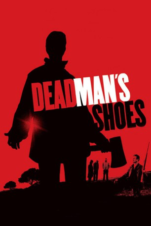

#5228 Blutrache: Dead Man's Shoes
Alternativ: Dead Man's Shoes
 
 IMDB-Wertung: 7.7 / 10
IMDB-Wertung: 7.7 / 10  Metascore: 0
Metascore: 0 
Die letzten fünf Jahre kämpfte Richard für das Vaterland bei einer Kommandoeinheit im Orient. Jetzt kehrt er heim ins verregnete englische Kleinstädtchen, wo die örtlichen Gaunerclique im obligaten Vollrausch dem kleinen, geistig zurückgebliebenen Bruder übel mitspielte. Richard hat keine Lust, sie damit davon kommen zu lassen, und nimmt die Quälgeister seines Bruders einen nach dem anderen ins Visier, um sie zu ängstigen, vor ihren Freunden zu demütigen und nacheinander ins Jenseits zu befördern.
Jahr: 2004
Dauer: 86 Minuten
FSK: 18
Land: England Studio: Ascot Elite Home EntertainmentTonspuren: DD5.1 - ,
Untertitel: Deutsch, Englisch,
Auflösung: 720p (1264x720) Größe: 4710 MB
Genre: Thriller, Drama, Krimi
Regisseur: Shane Meadows
Drehbuch: Taylor Hackford
Soundtrack:
Darsteller:
 Paddy Considine als Richard
Paddy Considine als Richard Gary Stretch als Sonny
Gary Stretch als Sonny Toby Kebbell als Anthony
Toby Kebbell als Anthony- Paul Sadot als Tuff
 Jo Hartley als Marie
Jo Hartley als Marie- Emily Aston als Patti
 George Newton als Gypsy John
George Newton als Gypsy John- Andrew Shim als Elvis
- Stuart Wolfenden als Herbie
- Neil Bell als Soz
- Seamus O'Neill als Big Al
- Paul Hurstfield als Mark
- Craig Considine als Craig
- Matt Considine als Matthew
- Arthur Meadows als Mourner
- Gill Meadows als Mourner
- Neil Dodd als Mourner
- Benn Dodd als Mourner
- Jordan Dodd als Mourner
- Lauren Dodd als Mourner
- Jenna Winter als Mourner
- Pauline Herbert als Super 8 footage
- Mark Herbert als Super 8 footage
- John Farrar als Super 8 footage
- Maurice Hemmingway als Super 8 footage
- Sandra Hemmingway als Super 8 footage
- Darren Hemmingway als Super 8 footage
- Wayne Hemmingway als Super 8 footage
Datei: X:\FSK18-2000-2009\Blutrache Dead Man's Shoes (2004, FSK18, 1264x720).mkv seit 03.01.2017
Festplatte: FSK18
 Es gibt insgesamt 106 Filme in der Gruppe 'FSK18-2000-2009'
Es gibt insgesamt 106 Filme in der Gruppe 'FSK18-2000-2009'